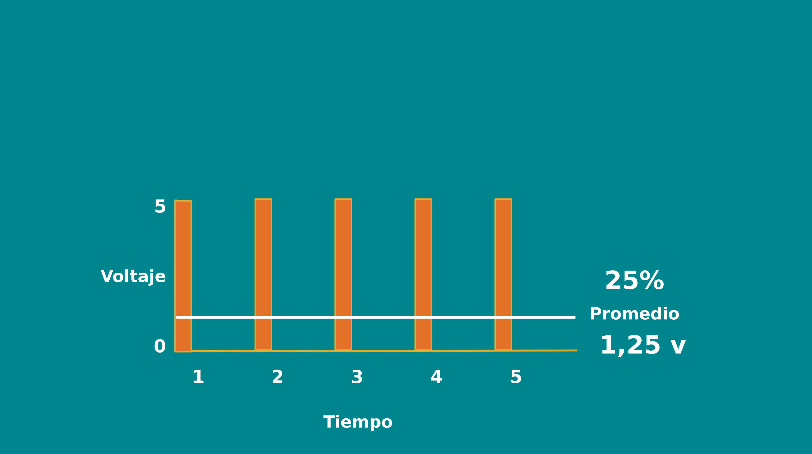

ESP8266 ARDUINO CON WIFI

CARACTERÍSTICAS DEL ESP8266
Byte
El byte es la unidad de información digital formada generalmente por ocho bits (serie de ceros y unos). Estos 8 bits permiten 256 combinaciones. El byte es la unidad que las computadoras utilizan para representar un caracter como una letra, un número y otros símbolos. El byte es la unidad de datos más pequeña con significado y la menor unidad de memoria.

Es uno de los fundamentos del IDE de arduino (Integrated Development Environment o Entorno de Desarrollo Integrado) trabajaremos con bytes para controlar los pines PWM (pulse width modulation o modulación por ancho de pulso) que explicaremos más adelante. Otra relación con los bytes es que cada byte representa un carácter o una tecla o grupo de teclas

PWM (puse with modulation)
Para emular una señal analógica se cambia el ciclo de trabajo (el tiempo que permanece encendido y apagado de tal forma que el valor promedio de la señal sea el voltaje aproximado que se desea obtener, pudiendo entonces enviar hasta 256 voltajes diferentes entre 0 y 5 voltios.

PINES DE ARDUINO
En arduino encontramos 3 tipos de pines.